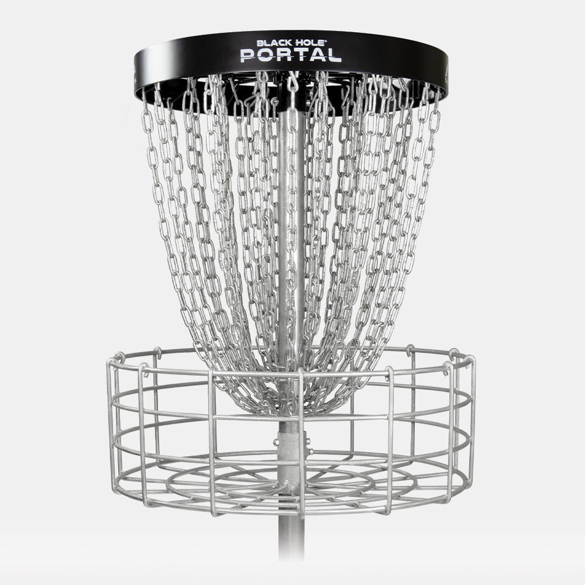
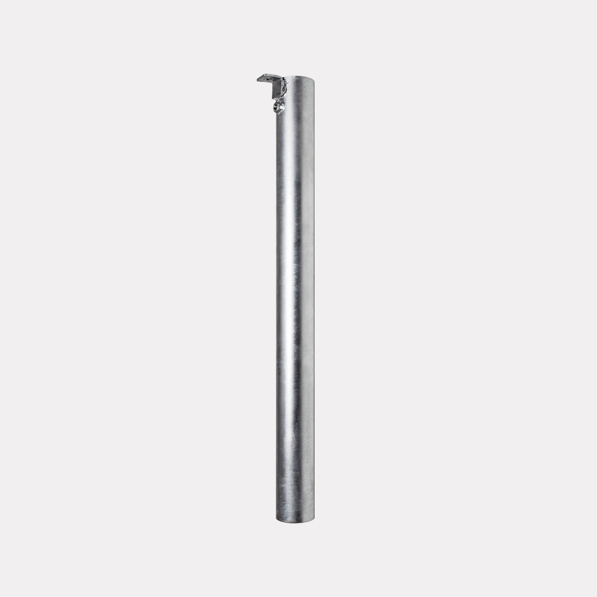

A Partnership Proposal for
Walker Park & Kessler Park
Fayetteville Disc Golf Association — a 501(c)(3) nonprofit
Through a member-funded capital campaign, FDGA has raised $18,538.94 for course improvements at Walker Park's Waxhaws Disc Golf Course, with an eye toward a potential new course at Kessler Mountain — at no cost to the City. In partnership, we're proposing a fee arrangement that reflects that investment, a small new course at Kessler Park built from materials we're already retiring, and volunteer labor to help make it happen.
See the proposal ↓Fayetteville Disc Golf Association is a 501(c)(3) nonprofit dedicated to growing disc golf in Fayetteville — maintaining public courses, running community tournaments, and providing programming for players of all skill levels. We do this work regardless of the outcome of this proposal; we're asking the City to partner with us in doing it better.
FDGA's Capital Campaign for Walker Park
$18,538.94 raised from multiple FDGA member donations, earmarked for capital improvements at Walker Park's Waxhaws Disc Golf Course and a potential new course at Kessler Mountain — facilitated entirely through FDGA, at zero cost to the City.

New Baskets — MVP Black Hole® Portal
18 hole baskets plus 1 practice basket, at $799.95 each — $15,199.05 total. A 4-ring, 36-chain catch system engineered to disperse kinetic energy from both soft and firm putts, PDGA championship approved, with a 20-year warranty against rust and corrosion. Available in red, yellow, and orange — high-visibility colors that are easier for road traffic to spot and easier for new players to find, on top of the improved catch performance.

New Hole Positions — Permanent Ground Sleeves
Eleven hot-dipped galvanized steel ground sleeves, at $39.99 each — $439.89 total. Each sleeve lets a basket be relocated between multiple permanent pin positions, so course layouts can rotate throughout the year — keeping the course fresh for regular players and giving FDGA more flexibility when designing tournament layouts.
Extended Tee Pads
$2,000 donated toward concrete work extending the existing tee pads at Walker Park, improving footing and durability for high-traffic tees — the same contribution also covers pouring the new tee pads at Kessler Park, once approved.
New Tee Signs
18 tee signs at $50 each — $900 total. FDGA is funding and commissioning the design and installation of new tee signage across the course.
pending
FDGA is sponsoring The Disc Golf Dojo — the same local outfit already contracted by the City for disc golf programming — to professionally design the new Kessler layout, at $1,000 per 9 holes, so it's built right the first time.
The City's Own Plan Already Agrees
None of this is a new idea. The City's own 2023 Parks System Master Plan — built on years of resident survey data — already documents the need for more disc golf, in the City's own numbers and in residents' own words.
A documented shortfall
The Plan counts 2 disc golf courses citywide today — 1 per 46,975 residents, one of the lowest-served facility types the City tracks. Its own 2040 gap analysis says Fayetteville needs 3 just to hold today's level of service as the city grows: a shortfall of at least one course, already.
Source: Table 9, PDF p. 44 & Table 14, p. 99
The most-mentioned ask
In the Plan's open-participation survey (461 respondents), "disc golf" was the single most common topic in open-ended comments on what to improve — 18%, ahead of natural-space preservation, requests for more parks, and every other category.
Source: Table 48, PDF p. 358
Already a recognized partner
FDGA is already listed in the Plan among the City's recognized community recreation partner organizations — alongside groups like Fayetteville Youth Baseball and the Ozark Off Road Cyclists.
The City already invests here
The Plan notes artificial turf fields were installed at Kessler Mountain Regional Park in 2019/2020 — recent capital investment in the same park FDGA is now asking to build a course in.
Source: PDF p. 203
In residents' own words
“We need more disc golf courses and the existing course to be better maintained (Walker Park).”
Fayetteville resident, Master Plan survey — p. 331
“Crowded disc golf courses a problem that the disc gold [sic] community would solve with their own time and effort if only given an adequate property to develop.”
Fayetteville resident, Master Plan survey — p. 336
“Disc Golf!!! Cmon, Fayetteville....yall are slacking behind Springdale, Farmington, West Fork and Bentonville's parks and rec. The sport is BOOMING and just requires a little weekly mowing.”
Fayetteville resident, Master Plan survey — p. 322
“The lack of maintenance to the Fayetteville Disc Golf courses. West Fork, Farmington, Springdale, and even Huntsville is doing a better job. It's the fastest growing sport in the U.S.”
Fayetteville resident, Master Plan survey — p. 345
Source: Fayetteville Parks System Master Plan and Appendices, February 2023 — the City's own adopted plan, page numbers as printed in the PDF.
A 10-Year Reservation Fee Partnership
In recognition of this donation and the programming FDGA already provides at no cost to the City, we're asking for a 10-year waiver of reservation fees for FDGA-run tournaments and events.
Fees only increase over time, so we're not asking for anywhere near the full equivalence — we're asking for the conservative low end: a firm 10-year partnership.
Other cities don't pass this fee on
Several neighboring cities already waive reservation fees for their local disc golf associations in recognition of the volunteer programming and course investment those 501(c)(3) organizations provide. We're asking Fayetteville to extend the same partnership.
Disc golf serves a lower-income player base
Compared to many other organized sports the City supports, disc golf's average player income skews lower. Reservation fees fall disproportionately hard on the community FDGA serves — a free-to-play sport should stay accessible.
FDGA is the programming
Outside of the City's existing arrangement with Kevin Burdick / Disc Golf Dojo through Mark May, FDGA is the only organization providing organized disc golf programming in Fayetteville — tournaments, leagues, and course stewardship, all volunteer-run.
A New Course at Kessler Park
We'd like to use a small acreage at Kessler Park to install a new disc golf course, built with the baskets being retired from Walker Park during the Waxhaws upgrade — nothing goes to waste.
Built around your existing plans
We know the City has plans underway at Kessler — new pavilions, and potentially an expanded bike park on the hill. We don't want to get in the way of either. FDGA has a preliminary course design sited in a wooded area of the park, and we walked it with local mountain bikers first: the terrain there isn't well suited for bike trails, and it sits clear of the areas the City would most likely want to reserve for future trail expansion.
The full preliminary layout is included below and open to the City's feedback before anything is finalized.
FDGA will also sponsor The Disc Golf Dojo as professional course designer for the new Kessler layout — $1,000 per 9 holes — so it's designed right the first time, not just laid out by volunteer guesswork.
Kessler was already on residents' list. In the City's own community engagement summary for the Master Plan, Disc Golf was named among the top requested uses for Kessler Mountain Regional Park specifically (14 responses, PDF p. 235).
And residents already asked for this siting approach. “Building and Development of Disc Golf Courses in non-flood plain areas so we can focus on ongoing development of fairways… without the constant setbacks due to flooding” — Fayetteville resident, Master Plan survey, p. 321. That's exactly the wooded, non-floodplain site FDGA is proposing here.
Volunteer Labor & Equipment
FDGA can do most of the physical work ourselves — we're asking for a hand with equipment and concrete.
Site prep, covered
FDGA has volunteer labor ready to go, including members certified to operate forklifts and skid steers. We can handle clearing privet and other invasive species at the Kessler site ourselves.
Equipment loan
We're asking to borrow City equipment (skid steer / forklift) to support that clearing work, rather than renting it ourselves.
Concrete help
FDGA is already putting $2,000 toward extending the tee pads at Walker Park and pouring the new tee pads at Kessler (once approved). We're asking whether the City's concrete team or a preferred vendor could help with the labor.
Who's Asking for Disc Golf
This proposal is one piece of FDGA's broader 10-year plan for disc golf in Fayetteville.
What We're Asking For
-
1
Accept the gift
FDGA's $18,538.94 capital campaign for Walker Park: 19 new baskets, 11 new hole positions, extended tee pads, and new tee signage — installed by FDGA at no cost to the City.
-
2
A 10-year reservation fee waiver
For FDGA-run tournaments and events, in recognition of the donation and FDGA's ongoing programming and course stewardship.
-
3
Land to build a new course at Kessler Park
Using baskets retired from Walker Park, sited around the City's existing plans for the park, with FDGA also sponsoring a professional course designer ($1,000 per 9 holes).
-
4
Equipment loan and concrete assistance
FDGA volunteer labor covers the rest.
Let's talk it through
Prepared for Lee Farmer and Mark May ahead of our meeting — happy to walk through any part of this in person.